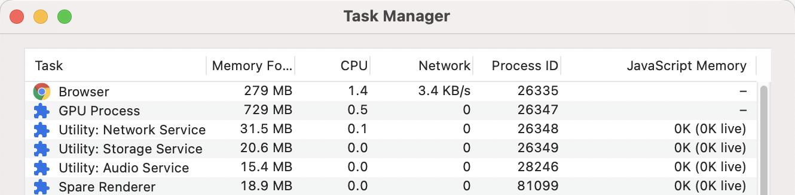

- 00 开篇词 JavaScript的进阶之路.md.html
- 01 函数式vs.面向对象：响应未知和不确定.md.html
- 02 如何通过闭包对象管理程序中状态的变化？.md.html
- 03 如何通过部分应用和柯里化让函数具象化？.md.html
- 04 如何通过组合、管道和reducer让函数抽象化？.md.html
- 05 map、reduce和monad如何围绕值进行操作？.md.html
- 06 如何通过模块化、异步和观察做到动态加载？.md.html
- 07 深入理解对象的私有和静态属性.md.html
- 08 深入理解继承、Delegation和组合.md.html
- 09 面向对象：通过词法作用域和调用点理解this绑定.md.html
- 10 JS有哪8种数据类型，你需要注意什么？.md.html
- 11 通过JS引擎的堆栈了解闭包原理.md.html
- 12 JS语义分析该用迭代还是递归？.md.html
- 13 JS引擎如何实现数组的稳定排序？.md.html
- 14 通过SparkPlug深入了解调用栈.md.html
- 15 如何通过哈希查找JS对象内存地址？.md.html
- 16 为什么环形队列适合做Node数据流缓存？.md.html
- 17 如何通过链表做LRU_LFU缓存？.md.html
- 18 TurboFan如何用图做JS编译优化？.md.html
- 19 通过树和图看如何在无序中找到路径和秩序.md.html
- 20 算法思想：JS中分治、贪心、回溯和动态规划.md.html
- 21 创建型：为什么说Redux可以替代单例状态管理.md.html
- 22 结构型：Vue.js如何通过代理实现响应式编程.md.html
- 23 结构型：通过jQuery看结构型模式.md.html
- 24 行为型：通过观察者、迭代器模式看JS异步回调.md.html
- 25 行为型：模版、策略和状态模式有什么区别？.md.html
- 26 特殊型：前端有哪些处理加载和渲染的特殊“模式”？.md.html
- 27 性能：如何理解JavaScript中的并行、并发？（上）.md.html
- 28 性能：如何理解JavaScript中的并行、并发？（下）.md.html
- 29 性能：通过Orinoco、Jank Busters看垃圾回收.md.html
- 30 网络：从HTTP_1到HTTP_3，你都需要了解什么？.md.html
- 31 安全：JS代码和程序都需要注意哪些安全问题？.md.html
- 32 测试（一）：开发到重构中的测试.md.html
- 33 测试（二）：功能性测试.md.html
- 34 测试（三）：非功能性测试.md.html
- 35 静态类型检查：ESLint语法规则和代码风格的检查.md.html
- 36 Flow：通过Flow类看JS的类型检查.md.html
- 37 包管理和分发：通过NPM做包的管理和分发.md.html
- 38 编译和打包：通过Webpack、Babel做编译和打包.md.html
- 39 语法扩展：通过JSX来做语法扩展.md.html
- 40 Polyfill：通过Polyfill让浏览器提供原生支持.md.html
- 41 微前端：从MVC贫血模式到DDD充血模式.md.html
- 42 大前端：通过一云多端搭建跨PC_移动的平台应用.md.html
- 43 元编程：通过Proxies和Reflect赋能元编程.md.html
- 结束语 JavaScript的未来之路：源于一个以终为始的初心.md.html
- 捐赠
34 测试（三）：非功能性测试
你好，我是石川。
上节课，我们学习了功能类测试。今天，我们来看一下非功能性测试中的性能、安全和辅助功能测试。对于一个Web应用而言，性能测试的复杂程度并不低于后端或端到端的测试。导致前端性能测试复杂度很高的主要原因是，影响Web应用性能的因素有很多，并且很多是应用本身不完全可控的。所以今天，我们重点来看一下关于性能测试，都有哪些指标、影响性能的因素和性能调优的方式。
性能测试
在任何测试前，我们都需要对要达到的目标有清晰的认识，针对性能测试也不例外。所以首先，我们要来看看对于Web应用来说，都有哪些性能指标。
性能指标
之前，我们说过JS虚机开发中做内存管理和优化的时候，会关注浏览器和应用的流畅度（smoothness）和响应度（responsiveness）。其实，对于JS应用的开发者来说，也可以参考类似的 Rail 指标。Rail（response, amination, idle，load）是响应、动效、空闲和加载这4个单词的缩写。下面，我们来分别看下它们所代表的意义。
- 关于响应，原则是我们的应用应当在50ms内处理响应，并且在50-100ms内提供一个可见的响应；
- 关于动效，如之前讲过的，在处理渲染时，我们的帧预算是每秒60帧，也就是每帧要控制在16.6ms内渲染完成；
- 关于空闲，无论是在加载模式还是垃圾回收的一讲中，我们都提到过应该最大化地利用空闲时间，但是这里需要注意的是，这个利用也需要一个度，如果利用这个时间需要处理的任务超过了50ms，就会影响我们第一点说的100ms内的响应；
- 关于加载，对于页面的加载而言，我们的应用应该尽量在5秒内完成初次加载，并且在2秒内完成后续页面的加载。
影响性能的因素
说完了测试指标，我们再来看看影响Web性能的因素。前面，我们说过，影响性能的因素是错综复杂的。从大的种类来看，其中就包括了但不限于网络环境、资源的加载和浏览器渲染等外在因素，以及内存管理、垃圾回收等内在因素。
面对这么多的因素，如果完全通过手动的方式来做性能测试，会非常耗费时间和精力，而且要把这些测试的结果叠加转换成上述指标，又会是一个繁琐的过程。为了解决这个问题，大多的浏览器都提供了开发者工具帮助我们进行这些测试。以Chrome为例，我们可以用到的就有Lighthouse和Performance Insights两个工具。
性能测试工具
首先，我们可以看下Lighthouse。在开发者工具的 Lighthouse 页签下，我们可以选择性能检测的选项。从检测的结果中，我们可以看到之前提到的在渲染和加载中关注的FCP、TTI等指标。同时我们可以看到一些性能诊断的建议，比如减少过多的DOM节点、针对静态资源使用高效的缓存策略。同时，我们可以验证一些已经优化项，比如压缩后的JS和CSS文件。
但是上述的结果中，我们得到的基本上是一个个的数字，对加载过程中的时间分布没有直观的感受。而通过性能洞察（Performance Insights）的页签，我们可以更直观地基于页面实际的使用场景，让页面加载的过程中产生的耗时在一条时间线上展示出来。这样，我们可以更直接地对一些性能瓶颈做分析判断和优化。
性能瓶颈排查
上面我们通过Lighthouse和Performance Insights，可以很好地对外在因素做分析。可是针对一些内存管理和垃圾回收类的问题，就无从知晓了。所以我们可以看到表象，但无法分析后面的根因。这个时候我们就需要对内存管理有深入的分析工具。Chrome同样在开发者工具中提供了相应的分析排查工具。
首先，我们可以通过更多工具->任务管理进入到内存管理的窗口，在这里，我们可以看到内存列展示的内存使用情况。这时，如果我们右键选择JavaScript Memory，也可以同时加载出JS的内存使用信息。那么Memory和JavaScript Memory这两列有什么区别呢？
这里的区别是Memory中包含的是我们的页面产生的DOM元素。而JS Memory包含的是JS生成的对象的数量和括号中包含的目前有的存活的对象数量。如果这里的数量过高，则需要进一步排查。

在排查的过程中，我们可以从空间和时间的维度来分析。
首先从时间的维度，我们可以通过开发者工具中的性能页签（Performance Tab）来做性能分析。在这里，我们可以勾选内存选项，然后选择录制，并且在开始和结束的时候通过点击垃圾桶的标志各做一次垃圾回收来避免来自测试时间段以外的干扰。
在结果的总览窗口中，heap图表示的是JS的堆，概览下方是计数器窗口。在这里，你可以看到按JS堆、节点和GPU内存等细分的内存使用情况。如果此时我们看到，随着记录的进行，结尾处的JS堆或节点的数量高于开始处，则意味着过程中可能存在着内存泄漏。
另外通过内存页签（Memory Tab），我们可以通过空间的维度来分析性能瓶颈。对于浏览器而言，只有当DOM节点在页面的DOM树或JavaScript代码中没有被引用时，才会被垃圾回收。当节点从DOM树中被移除，但仍然被一些JavaScript引用时，这些节点就被称为“脱离DOM树的节点”。脱离DOM树的节点是造成内存泄漏的常见原因。
堆快照是识别分离节点的一种方法。顾名思义，堆快照向我们展示了在快照时页面的JS对象和DOM节点之间的内存分布情况。在内存页签中，我们可以看到JS堆快照的选项，它可以帮助我们了解页面上JS对象和相关DOM节点的分布。
在获取快照后，在对象类型的筛选器中通过“detached”关键词，我们可以搜索脱离DOM树的节点。这时我们可能会看到红色和黄色两种节点。而我们需要关注的是黄色节点，因为它们是直接被引用的节点，在使用后需要被及时回收，它们的回收会顺带删除下面被间接引用的红色节点。
另外，我们也可以通过JavaScript内存分配的时间线，从时间的维度来看对象的内存分配，排查内存泄漏点。
安全测试
说完性能测试，我们再来看看安全测试。在网络的安全测试中，主要包含渗透测试和漏洞扫描。
渗透测试可以是黑盒或白盒的，也就是扮演入侵者的测试人员通过前端提供的测试环境和相关开发出来的应用来测试。在黑盒的情况下，入侵者默认没有代码访问，通过尝试，试图渗透到系统内部。
而漏洞扫描通常是白盒测试，比如很多的云服务厂商都会支持代码托管，在这个基础上，一般会附加漏洞扫描的测试工具。在这个扫描的过程中，负责自动测试的程序可以访问代码库中的代码，并对代码进行扫描，从中发现漏洞。
无论是渗透测试，还是漏洞扫描，这两种测试都是在软件工程中由专门的测试人员或云平台提供的工具来执行的，所以我们就不在开发测试这里展开讲了。
下面，我们就从开发的角度，看看我们在程序开发中可以做哪些初步的测试。之前，我们也讲过前端开发过程中可能会遇到的安全问题和解决方案，并且在讲到HTTP的时候，我们也了解了由传输层安全（TLS）和安全套接层（SSL）组成的HTTPS。所以，从前端，如何测试安全连接呢？
这里，我们同样可以通过浏览器提供的开发者工具。以Chrome为例，在安全页签（Security Tab）看到的主源的安全证书和连接的安全性，以及相关的资源的安全性，可以帮助我们对安全问题做初步的排查。
辅助功能测试
说完了安全，下面我们再来看看辅助功能测试。
辅助功能在很多欧美的网站是很重要的一个功能，它允许一些残障人士通过辅助功能浏览我们开发的页面。这里包含了色弱症、色盲症和失明的人等，他们按道理也应该可以无障碍地访问我们所开发的页面。在开发辅助功能时，我们一般要考虑两个问题，一是用户是否可以用键盘或屏幕阅读器浏览页面，二是页面元素是否为屏幕阅读器做了正确标记。
这里插播一条数据信息，当我们说到视障人士，大家可能会觉得这部分人群的比例很低，但实际上中国视障群体超过1700万，其中超过800万人完全失明。另外一个经常被忽略的群体是色盲或色弱的群体，中国色弱人数有6000多万，色盲人群有2000多万，加在一起，又是惊人的8000万人。也就是说光在国内，上亿人可能都会因为我们的页面没有辅助功能，而没法正常访问相关的内容。
开发对这部分人群友好的应用，不仅对大公司来讲是企业责任，即便是从功利的角度来看，这部分人群也是购买我们服务或产品的潜在客户。而越是访问量高的网站，要面对的这个群体就越大。如果我们对这部分用户不加以重视，那影响的不仅是声誉，也是我们的业务。所以无论是从社会发展进步的角度，还是市场角度，我们都应该尽可能为这部分用户提供相关的功能和测试。
色盲或色弱的人群所面临的主要困扰是无法分辨一些对比度较低的颜色。那么我们怎么能对这部分用户选用更友好的界面颜色呢？我们可以参考相关的指导性的技术标准WCAG，这是一部内容无障碍指南。其中一共有3级，A级是残障用户能够访问和使用Web内容的基本要求；AA级表示了内容总体可访问，并消除了访问内容的较大障碍；AAA级为一些残障用户提供了网络辅助功能的改进和增强。
还是以Chrome开发者工具为例，在 CSS 总览页签（CSS Overview Tab）下面，我们可以在对比度问题上，看到对比度有问题的字体和背景。比如在下面的例子中，我们可以看到当文字的灰色和背景的灰色相差不多的时候，是没有达到AA标准的，而基于蓝色背景的白色字体达到了AA标准，但是相比较AAA还是差一些。
另外除了CSS总览页签外，在开发者工具中，我们也可以通过在Lighthouse页签中勾选辅助功能来对网站做审计。通过审计，我们可以看到通过的结果、需要额外手工查看的问题以及在本次测试中不适用的测试用例。
总结
通过这一讲，我们看到如何在开发中针对非功能性的性能、安全、辅助功能做测试。而通过测试的这三讲，我们也知道了需要关注的是在开发过程中测试的重要性。从功能性测试中，我们了解了测试并不是一项开发后丢给测试人员的工作，而是测试驱动下“以终为始”的起点。从非功能测试的角度，我们可以看出基于JavaScript开发的前端应用，无论从性能、安全还是辅助功能角度，都有很多的容易被忽视的问题，而单独靠手工的测试无法有效地解决这些问题。这时，就需要借助工具来帮助我们提高测试的效率。
思考题
之前我们说过在JavaScript的多线程开发中，会用到ArrayBuffer和SharedArrayBuffer。那么，你知道如何通过浏览器提供的工具或独立的开发者工具来分析、排查和解决多线程开发中的性能问题吗？
欢迎在留言区分享你的经验、交流学习心得或者提出问题，如果觉得有收获，也欢迎你把今天的内容分享给更多的朋友。我们下节课再见！
© 2019 - 2023 Liangliang Lee. Powered by gin and hexo-theme-book.